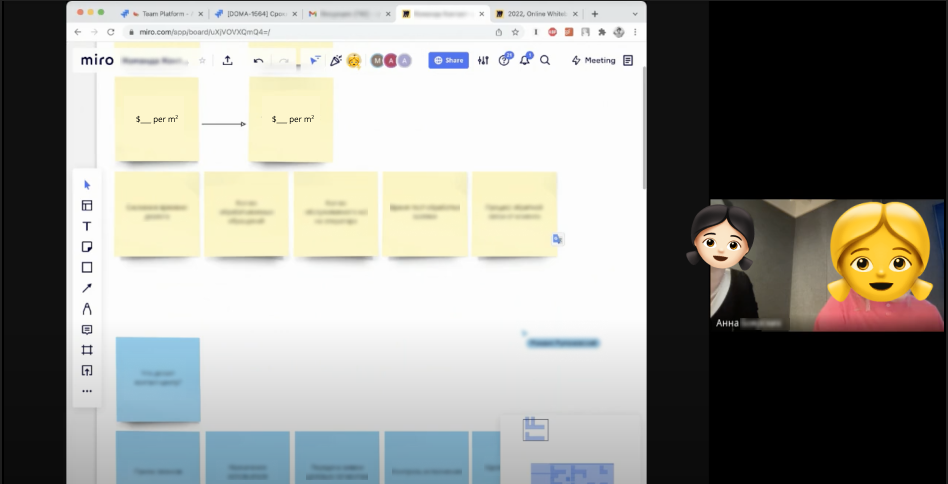
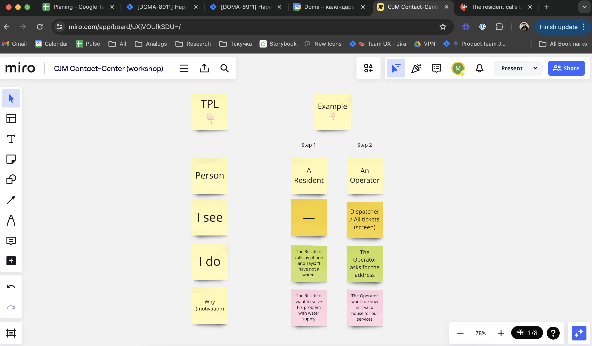
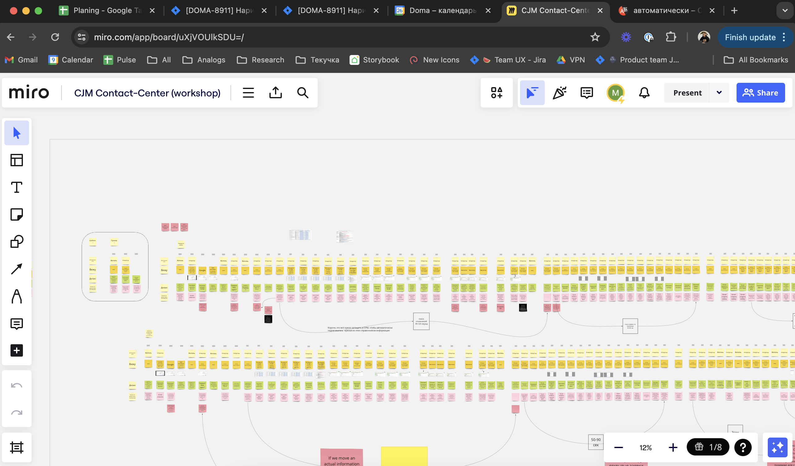
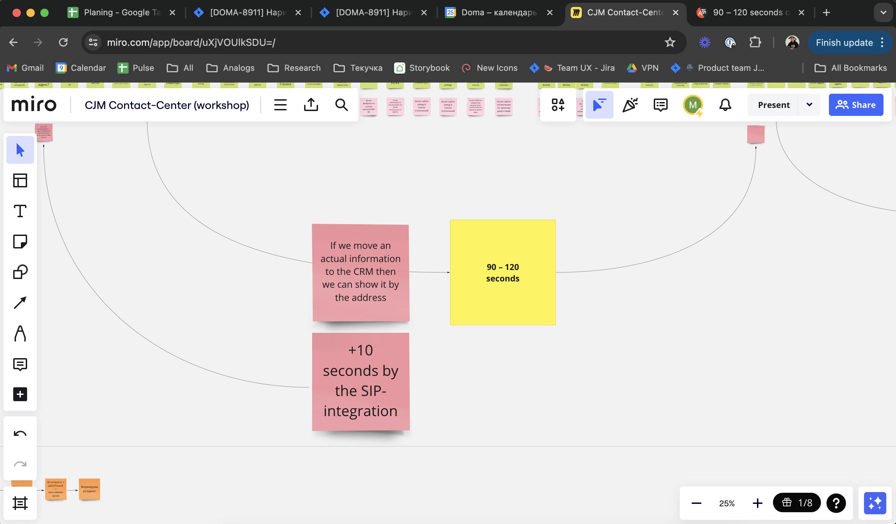
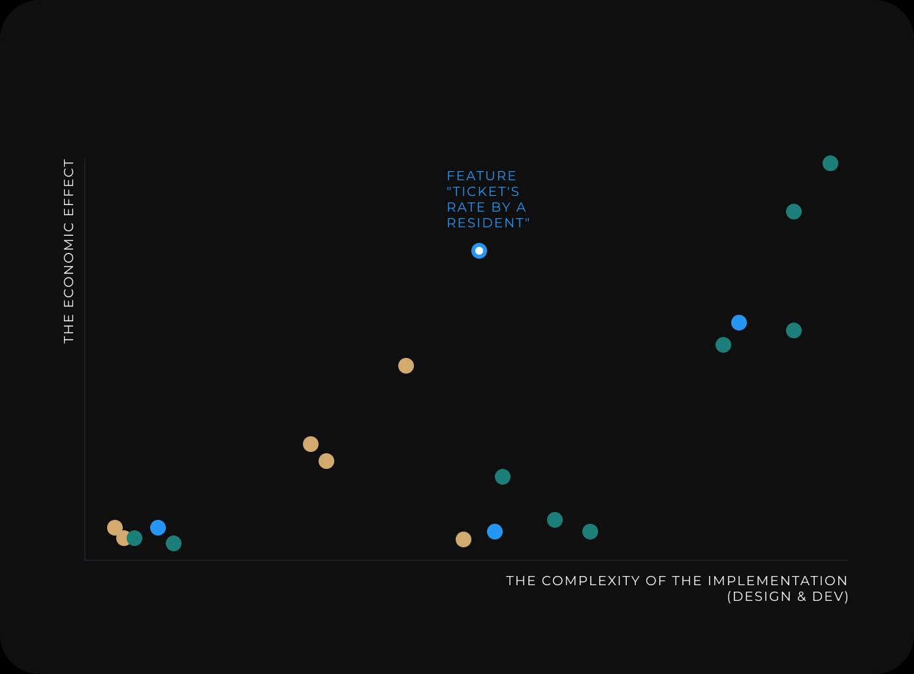
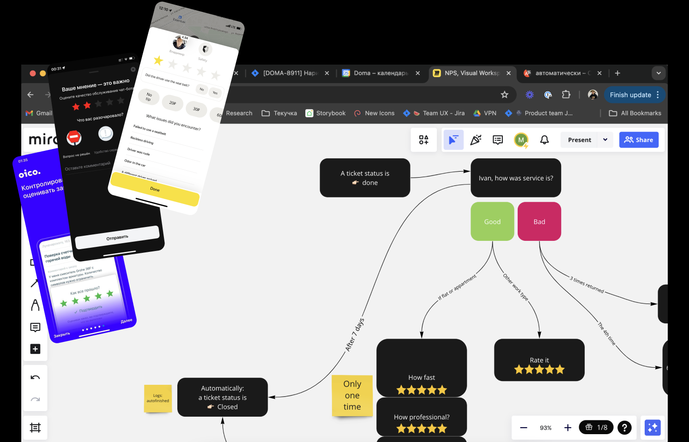
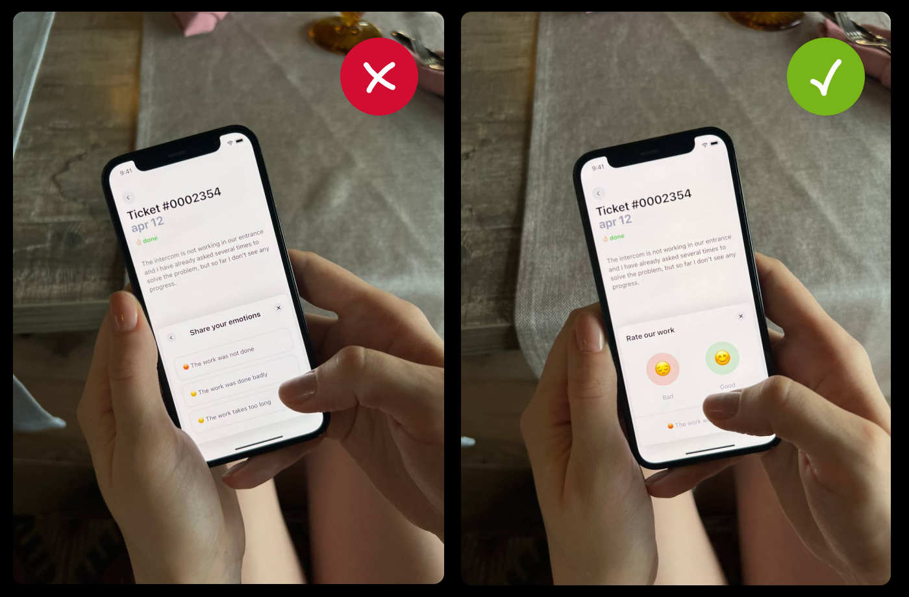
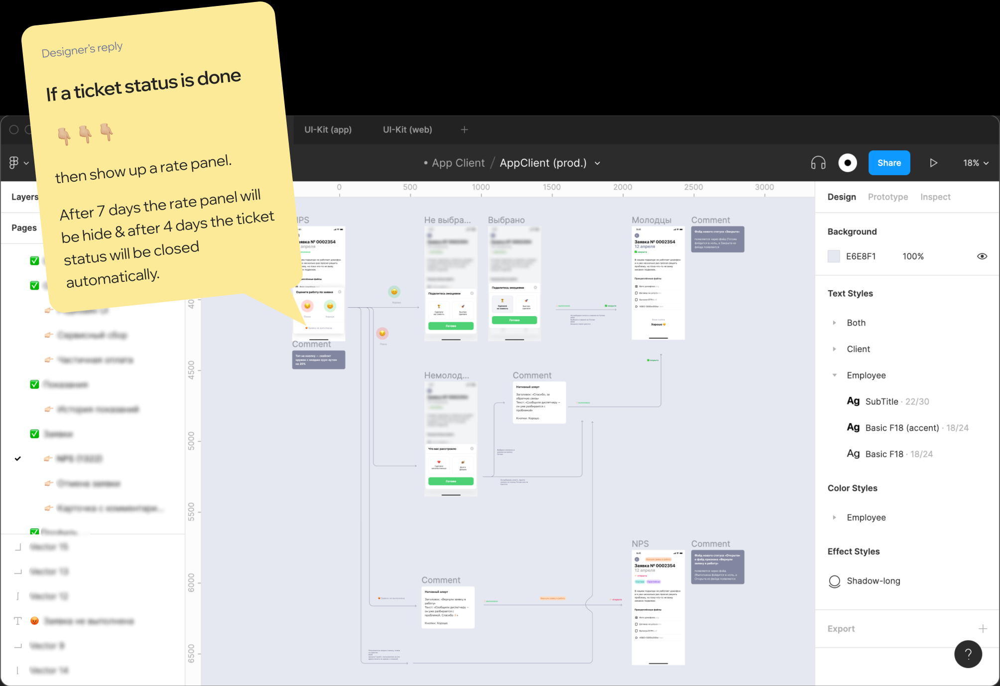

Growth strategy of the Contact Center
Contact Center is a company's tribe which uses
doma.ai
- Task:
-
it is necessary to reduce the cost of servicing
clients of the contact center by improving
the interface
- Solution:
-
we needed to analyze the dispatcher's workflow
in the current interface to find points
of growth and then improve the user experience
- Scope:
- CJM, hypotheses, custdev, craft UX/UI, teamleading
- Design team:
-
Anton (sr. product designer), Nastya (md. product
designer), Masha (ux writer), Vika (illustrator), me (head
of product design)
The strategy of design
At the beginning, we (the CPO, the business customer and me) set
goals and came up with a roadmap. We decided
to analyze the current dispatcher's workflow and then
find growth points. To do this, we decided to hold
a workshop

Template of simple CJM
I have prepared a simplified CJM template
for the workshop. With its help, we analyzed
the operator's workwflow in doma.ai and we found
the growth points

Workshop with a business stakeholders
As a result, we got 3 CJMs: CJM of creating
a new ticket, CJM of a consultations and CJM
of a confirmation of ticket

Hypotheses and prioritization of features
We wanted to understand which of the functions would give
us the best effect. To do this, we calculated how many
seconds we would save when using each function

The complexity of the launching and the economic effect
Then we determined which feature we would do first using
the parameters: economic effect and complexity
of implementation

UX/UI: feature "Ticket's rate by a resident"
So, we chose the first feature. This is feature "Ticket's rate
by a resident". Then we analyzed the references and drew
a logical feature's diagram

Validation of design
Then we tested different variants of design on friends
and chose one of them

Figma and dev. specifications
I have done all the user journeys and prepared
the specification for development. Also, I created a task
for second designer, so that he would make a new function
to the web interface

Design result: CRM & resident's app
Business result: we have increased the dispatcher's work efficiency
by 8.2%
What our scoring system was: we had an estimate of the feature
in seconds. That is, how much time the operator spends
on confirmation of the ticket. After the release
of the feature, we calculated how many tickets were
auto-closed with the mobile application